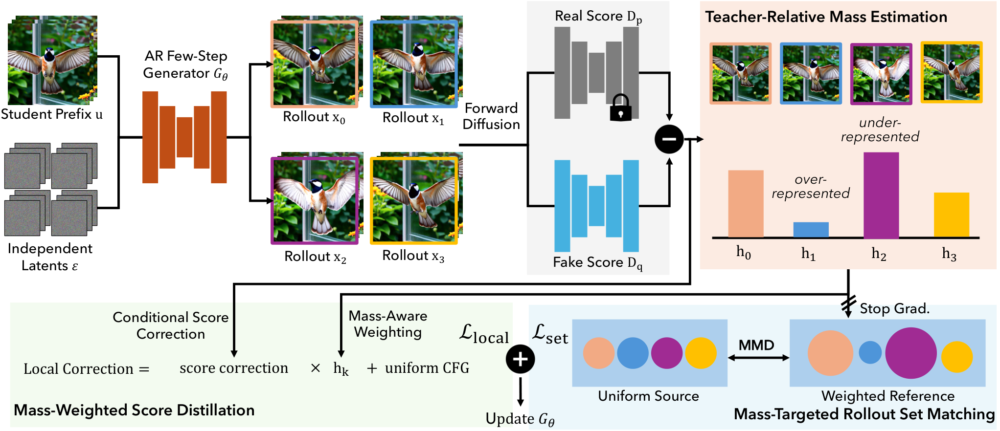

Paper Notes
01 · Plausibility Is Not Coverage
DMD 用教师分布指导少步生成器。标准反向 KL 的期望取自学生样本：如果学生很少产生某种教师支持的结果，该结果就很少贡献训练信号。学生可以生成少数看起来合理的片段，却未必以合理频率生成不同动作与场景变化。这里的 mass 指概率质量，不是物理质量或物体重量。
论文观察到，不同初始化在持续训练后都出现动态性下降，而部分图像质量指标仍上升。这个现象使“选择早期 checkpoint”成为质量与运动之间的取舍。作者进一步推测复杂运动的分布更分散，更容易在模式偏好下失去权重；这一机制解释不能仅由运动分数下降独立证明。
需要区分三个概念：单个视频是否可信、一个视频是否有运动、同一提示的多个随机种子是否覆盖不同结果。Dynamic Degree 只统计被判断为动态的视频比例，不直接等于分布覆盖度。
Paper Notes
02 · Read the Shared-Prefix Pipeline

Yiyu Li et al., 2026. Original figure, unchanged. CC BY-NC-SA 4.0. · Paper & Caption ↗
原图左侧首先用当前学生生成历史 u，并停止历史及其 KV 缓存的梯度。随后固定同一个提示与历史，从独立噪声生成 K 个当前片段。默认 K=4；这些是同一条件分布的多次抽样，不是四个不同提示的视频。这样，续写间的相对支持度才具有可比性。
中间对各续写添加同一份扰动噪声，再查询冻结教师和跟踪学生分布的 fake-score 网络。后者不是质量判别器，它通过学生样本上的去噪学习估计学生分布的 score。实现采用 D_q=D_p+R_φ 的残差参数化，路径中点的额外查询可复用这种结构，减少对 14B 教师的调用。
右侧的权重进入两项监督。下方左侧重加权每个续写的条件 score 修正；下方右侧把整组续写与一个重新分配权重的参考集合对齐。推理时这些分支都被移除，仍按普通四步自回归采样生成视频。
Paper Notes
03 · From Score Differences to Relative Mass
令 p、q 分别为固定历史与噪声水平下的教师、学生密度，score 是对当前 noisy latent 的对数密度梯度。两者之差等于 log(p/q) 的梯度。因此，沿两个续写之间的路径积分，可以估计它们的对数密度比之差，不必知道各自归一化常数。
作者选组内 medoid 为锚点，用三点 Simpson 求积估计直线路径积分。随后中心化、温度缩放、裁剪并在组内归一化，得到平均值为 1 的 r̂_k。最终权重 h_k 混合均匀权重和比值估计；默认最大混合系数仅 0.25，并使用校准、噪声区间和有效样本量门控，避免不可靠估计支配训练。
理想情况下 qh=(1−λ)q+λp，说明加权把监督分布推向教师。但实际只有四个学生样本、学习到的 score 和数值积分，而且双向 score 网络看到的是加噪历史。这是有覆盖倾向的代理目标，不是精确前向 KL 优化，也不是在真实视频分布上测出了绝对概率。
s_p(y) − s_q(y) = ∇_y log[p(y)/q(y)] ℓ_k ≈ ∫(anchor → y_k) (s_p − s_q)ᵀ dy r̂_k = K · softmax(v)_k h_k = 1 − λ_eff + λ_eff r̂_k; mean(h) = 1
Paper Notes
04 · Two Losses and Their Gradient Paths
局部项只用 h_k 放大条件匹配修正 D_q−D_p，CFG 引导项保持统一强度。若把整个 guided 修正一起加权，就同时改变了提示引导强度，无法将效果归因于概率匹配。权重、score 和归一化因子均停止梯度；使用相同随机性重新生成可微续写，将预先算好的修正传回生成器。历史仍然 detach，不反向修改本次历史形成过程。
为什么还要集合项？若两个分离模式内部形状相同，只是频率不同，模式内部局部 score 差可以很小。再大的权重乘上近零修正，仍不能有效调整频率。MMD 项比较均匀的学生续写集合与 h_k/K 加权的停止梯度参考集合；位置起初相同，权重不同，因此仍可产生跨样本梯度。
总目标是 L_local+γL_set。fake denoiser 另行在不加权的学生片段上更新，不能把生成器重加权误写成 fake 网络的训练目标。校准门未开启时 h=1，集合项在同值重放处消失，系统退回不加权的条件片段 DMD。
g_k = [h_k(D_q,k − D_p,k) + (D_p,k − D_cfg,k)] / n_k L_local = Σ_k ‖x_k − sg(x_k − g_k)‖² / (2Kd) μ = (1/K)Σ_k δ(y_k); ν = Σ_k (h_k/K)δ(sg(y_k)) L = L_local + γ MMD²(μ,ν)
Paper Notes
05 · Evidence, Ablations, and Cost
主模型是因果 Wan2.1-T2V-1.3B 学生和冻结的双向 14B 教师，从 ODE 初始化开始训练，使用 248,221 条 VidProM 提示。主评测为 480p、5 秒视频，覆盖 1,003 条 MovieGen 提示及 946 条 VBench 提示。MovieGen 语义元数据由模型补充，并排除了不满足条件的空间关系维度；不能与不同评测协议的榜单直接混排。
VBench Total 从 Causal Forcing 的 84.14 到 84.98，Quality 从 85.22 到 86.17。并非所有指标都提高：MovieGen Semantic 为 78.78，低于 Causal Forcing 的 79.42；VBench Imaging Quality 也低于 Self Forcing。持续训练曲线在 1,000 次更新时保留约 83% 动态视频，而对照为 12–32%；这与主表的完整基准评测是不同采样池。
关键对照不是只与 Self Forcing 比。共享历史、多分支但均匀加权的条件片段基线，其动态比例仍从 65% 降至 11%；去掉 MMD 后 VBench Quality 为 85.19、Dynamic Degree 为 77.78%，低于完整方法的 86.17、88.89%。打乱组内权重对应关系也退化，说明不只是任意非均匀加权带来收益。
每次生成器更新约消耗 Self Forcing 的 2.6 倍 FLOPs，完整 1,000 次更新约 300 GPU-hours；“约 1%”仅指相对同样采用多分支的不加权基线，质量估计与集合项的额外开销。报告的 H100 17 FPS、0.69 秒延迟排除了 VAE 解码和首块，后者不是首帧等待时间。
Paper Notes
06 · Coverage Evidence and the Remaining Gap
附录使用 32 个提示、每提示 32 个学生样本，在 VideoMAE 特征空间评估种子间多样性与对教师参考的覆盖。Self Forcing 与 Mass Forcing 的 diversity 为 0.556 和 0.787，precision 为 0.351 和 0.455；但 Mass Forcing recall 仅 0.045。结果支持相对改善，不支持“覆盖了教师分布”。特征空间与有限样本也决定了这些指标只是可测代理。
全部续写仍由当前学生产生。如果某模式已经完全消失，这组采样没有该模式，便无法给它更大权重。因此作者从尚有覆盖的 ODE 初始化开始训练，而不是宣称能修好任意已坍缩 checkpoint。加噪历史和有限组估计，也是理论身份与实际算法之间的重要距离。
与 CodecOPSD 对照，二者都使用学生自身状态，但问题不同：CodecOPSD 学习在稀疏条件下接近完整条件教师，Mass Forcing 关注不同续写在监督中出现的相对权重。“on-policy”说明监督落在哪些状态，并没有自动回答如何保持分布覆盖。
Discussion
Reading Questions
Does more motion prove more diversity?
不能。运动比例是单视频动态性指标；同提示多种子覆盖需要额外评测，论文附录提供了 VideoMAE 特征空间的诊断。
Why can identical rollout locations yield an MMD gradient?
源集合与参考集合的位置相同，但参考权重不同且停止梯度。对源位置求导仍存在吸引或排斥，并非对两个同时移动的相同集合求导。
Is this an inference-time search method?
不是。分支、积分和集合匹配均用于训练；部署仍为四步自回归生成。额外成本应记在训练预算中。
References
Original figure reproduced unchanged with attribution under the license stated in its caption. Results are reported from the cited paper; no local model reproduction or implementation audit was performed.
Verified on 2026-11-28. Paper results refer to the linked versions. Paper metadata and source figures were checked on this date.